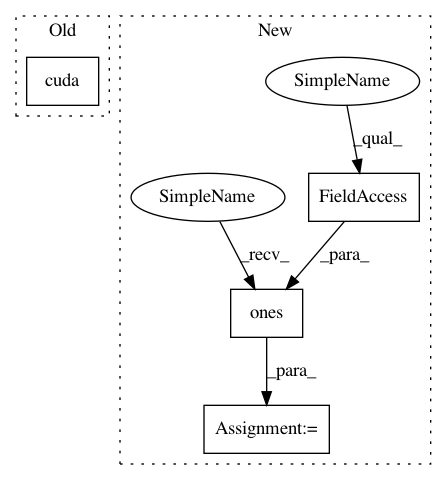

cbcc3f315c653706ceded6ba42f222616322a3f2,ch03/03_atari_gan.py,,,#,132
Before Change
true_labels_v = Variable(torch.FloatTensor([1.0] * BATCH_SIZE))
fake_labels_v = Variable(torch.FloatTensor([0.0] * BATCH_SIZE))
if args.cuda:
true_labels_v = true_labels_v.cuda()
fake_labels_v = fake_labels_v.cuda()
for batch_v in iterate_batches(envs):
// generate extra fake samples, input is 4D: batch, filters, x, y
After Change
dis_losses = []
iter_no = 0
true_labels_v = torch.ones(BATCH_SIZE, dtype=torch.float32, device=device)
fake_labels_v = torch.zeros(BATCH_SIZE, dtype=torch.float32, device=device)
for batch_v in iterate_batches(envs):
// generate extra fake samples, input is 4D: batch, filters, x, y
In pattern: SUPERPATTERN
Frequency: 3
Non-data size: 4
Instances
Project Name: PacktPublishing/Deep-Reinforcement-Learning-Hands-On
Commit Name: cbcc3f315c653706ceded6ba42f222616322a3f2
Time: 2018-04-25
Author: max.lapan@gmail.com
File Name: ch03/03_atari_gan.py
Class Name:
Method Name:
Project Name: PacktPublishing/Deep-Reinforcement-Learning-Hands-On
Commit Name: cbcc3f315c653706ceded6ba42f222616322a3f2
Time: 2018-04-25
Author: max.lapan@gmail.com
File Name: ch03/03_atari_gan.py
Class Name:
Method Name:
Project Name: jadore801120/attention-is-all-you-need-pytorch
Commit Name: bed0a0ae26451c9897cf1ee0f7302e42eba9b42c
Time: 2018-08-23
Author: yhhuang@nlg.csie.ntu.edu.tw
File Name: transformer/Models.py
Class Name:
Method Name: get_attn_subsequent_mask
Project Name: facebookresearch/ParlAI
Commit Name: 8efba770f7f34fd8a1b62f93e4dcc9f6ff2d7b60
Time: 2019-08-12
Author: roller@fb.com
File Name: projects/wizard_of_wikipedia/generator/agents.py
Class Name: EndToEndAgent
Method Name: _dummy_batch